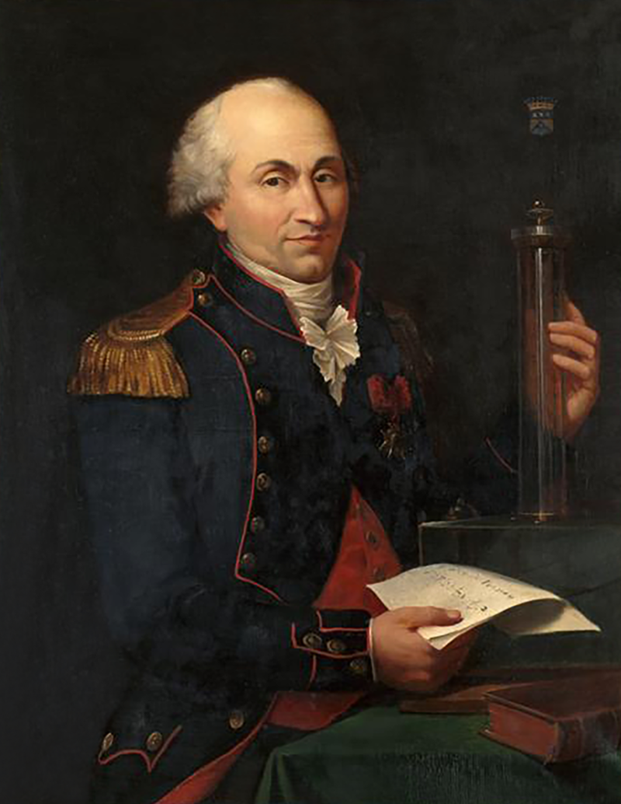

1. Early Theories of Electricity and Magnetism
In the 18th century, scientists like Charles-Augustin de Coulomb began exploring the forces between electric charges. By the 19th century, Hans Christian Orsted discovered that electric currents produce magnetic fields, linking electricity and magnetism in a way that set the stage for further discoveries in electromagnetic waves.
By setting up a compass through a wire carrying an electric current, Oersted showed that moving electrons can create a magnetic field.
The magnetic field created by the current goes in circles around the wire.
Orsted Experiment Simulation:
Use the slider to control the current through the wire and observe the deflection of the compass needle.
2. Faraday’s Discoveries and Field Concept
Michael Faraday’s experiments in the 1830s established the concept of fields, showing that changing magnetic fields can create electric currents. Faraday’s work laid the groundwork for the idea of electromagnetic fields that interact and propagate through space.
Michael Faraday explained electromagnetic induction using a concept he called lines of force. However, scientists at the time widely rejected his theoretical ideas, mainly because they were not formulated mathematically. An exception was James Clerk Maxwell, who in 1861–62 used Faraday's ideas as the basis of his quantitative electromagnetic theory.
3. Maxwell’s Equations and Theory of EM Waves
In 1864, James Clerk Maxwell developed four equations that mathematically unified electricity and magnetism, predicting the existence of electromagnetic waves. Maxwell’s theory suggested that light itself is an electromagnetic wave, a revolutionary idea that profoundly changed physics.
4. Experimental Validation by Heinrich Hertz
In 1887, Heinrich Hertz validated Maxwell’s theories by generating and detecting radio waves in his laboratory. Hertz’s experiments demonstrated that electromagnetic waves exhibit properties of reflection, refraction, and polarization, proving that these waves exist beyond visible light.
Summary:
| Date | Event |
|---|---|
| 1785 | Coulomb’s Law formulated by Charles-Augustin de Coulomb. |
| 1820 | Ørsted discovers the relationship between electricity and magnetism. |
| 1831 | Faraday’s Law of Induction: Changing magnetic field induces electric current. |
| 1864 | Maxwell’s Equations predict the existence of electromagnetic waves. |
| 1887 | Heinrich Hertz experimentally verifies electromagnetic waves. |
| 1895 | Guglielmo Marconi transmits the first radio signal. |